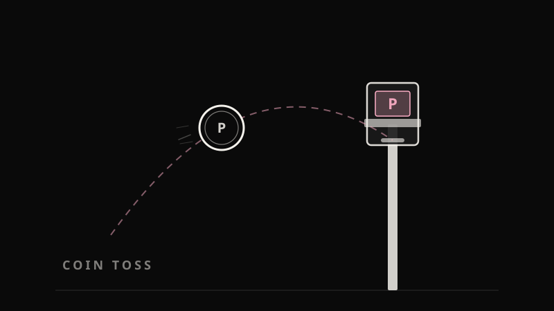

Discovery that changes the roadmap
Jobs to be Done, opportunity solution trees and a steady rhythm of user interviews, so we build the missing piece instead of the loudest request.
66→87%CSAT liftSenior Product Manager · Oslo, Norway
I turn complex problems into simple products people trust. Discovery-led, data-backed, and quick to prototype with AI.

I'm a Senior Product Manager at Arrive (formerly EasyPark Group), where I own parking policies and pricing across Europe, ANZ and the US.
My work sits where complex systems meet real people: operators configuring prices for thousands of zones, where one wrong field means a driver pays when parking should have been free. I like taking that kind of complexity and making it safe, simple and fast.
I lean on continuous discovery, hard data and hands-on prototyping. When it helps a decision, I'll build the first version myself, often with AI, sometimes during the meeting. Outside work I build small apps and games, mostly to learn.
Four things I bring to a product team, each backed by a case study below.
Jobs to be Done, opportunity solution trees and a steady rhythm of user interviews, so we build the missing piece instead of the loudest request.
66→87%CSAT liftPricing engines, configuration tools and platform migrations, where mistakes cost real money. I help design guardrails that catch errors without slowing people down, and I'm trained in incident management for when things still go wrong.
−36%misconfigurationsHands-on analysis in SQL and Snowflake: sizing opportunities, segmenting users and finding root causes, so priorities rest on evidence rather than opinion.
71%coverage at MVPI build working prototypes in hours, not sprints, to check an idea with stakeholders before engineering commits to building it properly.
<1 hridea to validated prototypeThree in depth, three more below. Each one covers the problem, what I did, and what changed.
A silent safety net that catches pricing mistakes before drivers ever see them.
| Period | Time | Price / hour |
|---|---|---|
| 1 | 08:00–12:00 | |
| 2 | 12:00–17:00 | |
| 3 | 17:00–20:00 | |
| 4 | 20:00–23:00 |
Errors (1)
Price is far above the median for this tariff.
Period 3 · €250.00 is 91× the median
PRICE_SPIKE_MEDIAN
Tariff configurations are detailed and complex, and small mistakes are easy to miss by eye. The goal was to catch them where they start, before they could ever reach drivers, without slowing operators down.
I ran a root-cause analysis across past configuration issues. Most fell into a few predictable patterns:
I then designed a background validator that checks 33 rules on every save and flags issues without ever blocking the save.
Misconfigurations fell 36% year-on-year. Errors are caught where they start, operators stay in their flow, and acknowledged warnings leave a clear audit trail.
From stakeholder call to validated prototype in under an hour, built live with AI.
| Zone | Date | Window | Price | Result |
|---|
Run the test to see results.
Configuration experts managing parking across major US cities had a scale problem. A single nationwide holiday touches thousands of zones, and one missed configuration means drivers get charged when parking should be free.
Instead of writing a spec, I built a working prototype with AI during the stakeholder call itself. We tested it live, iterated on the spot, and agreed it was the right solution within the hour. Engineering then built it properly and securely.
Zero holiday-related pricing incidents since release. Because the tool is flexible, it's now used as a general pricing QA tool by configuration experts across markets, not just for holidays.
Is self-service pricing viable? I answered with data before a line of code was written.
Tier 8 became the MVP scope. Everything after it adds far less.
Half of all operators are simple enough to self-serve today
Operators couldn't update their own prices. Every rate change, however routine, needed a configuration expert. Was a self-service product viable, and what would it have to cover to be useful across the whole operator base?
I pulled tariff data for 5,640+ EU operators from Snowflake and built a 0–25 complexity score across 39 configuration dimensions, splitting operators into four tiers. I checked all 40 tariff fields for whether operators could safely edit them (24 could), then modelled how much of the operator base each feature tier would cover.
A data-backed MVP scope with measured coverage at every milestone: 52% of operators viable right away, 71% covered by tier 8. Price changes, the most requested operator action, came out as the clear place to start.
Owning the domain behind 2.8B+ price requests a year, and making it easier to configure correctly.
Pricing across 20+ countries, each with its own regulations, currencies and operator models, runs on one shared engine. Every new market adds edge cases, which makes getting configuration right harder as the platform grows.
I took ownership of the domain and ran structured discovery to learn where operators needed it to work better. I prioritised the edge cases that mattered most to them, worked with engineering on root causes, and set up regular user interviews.
CSAT rose from 66% to 87%. The engine runs live in every active market with 100% uptime over the last 24 months, and engineering time has shifted from maintenance to growth.
A small feature that removed the most repetitive job operators had.
In the time it took to build one configuration from scratch, operators can now create almost four.
Operators often needed configurations very similar to ones they already had, and building each from scratch meant repeating the same manual steps.
I mapped operator workflows with Jobs to be Done and an opportunity solution tree. It showed that copying an existing configuration wasn't a nice extra. It was what operators were actually trying to do.
Configuration time dropped from 105 to 27 seconds, 74% faster. Error rates and support load fell with it, and operators work with more confidence.
Retiring a legacy pricing platform without breaking a single live market.
How delivery played out
Illustrative shape: fixes landed here and there, most new features shipped at the end.
A legacy parking platform was being retired. Before migrating, every configuration model, tariff type and pricing behaviour had to be mapped to the new platform, and every gap closed without disrupting live markets.
I led a systematic gap analysis across the calculation engine, configuration UI, tariff types and operator workflows. We built simulation tools to prove pricing parity between the old and new platforms, created a new tariff type for configurations that weren't supported before, and automated the bulk migration.
All 35+ gaps closed over 18 months. Pricing parity was confirmed in every migrated market, automated jobs removed manual rework, and the migration finished with zero pricing incidents in production.
Small products where I get to be PM, designer and engineer at once. It keeps my instincts sharp and my prototyping fast.

